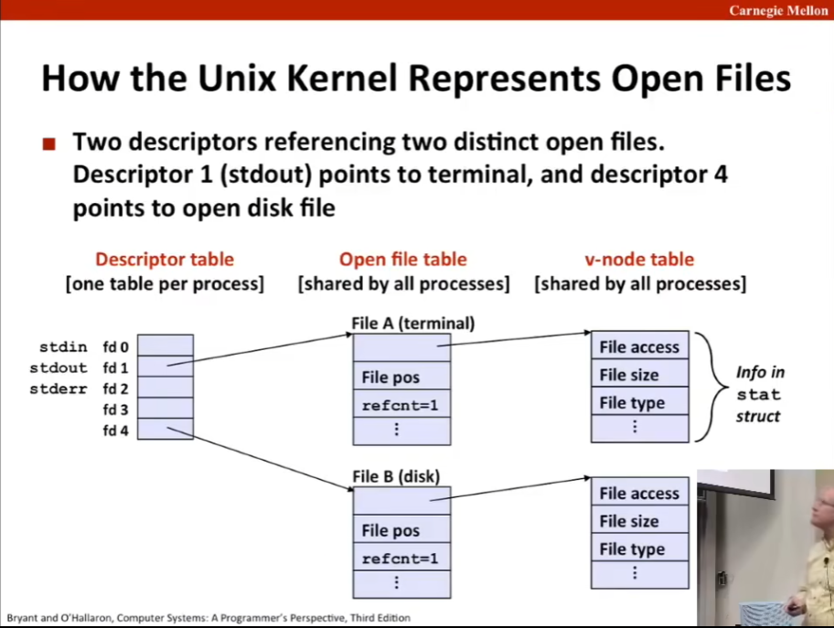
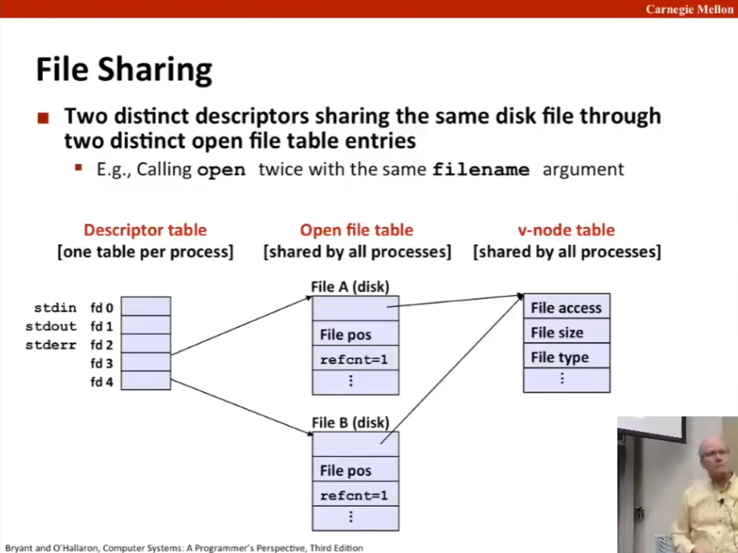
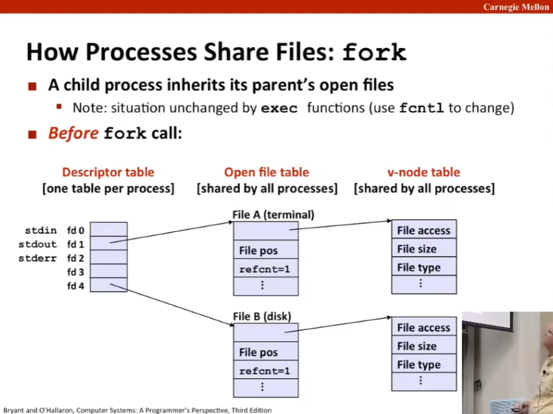
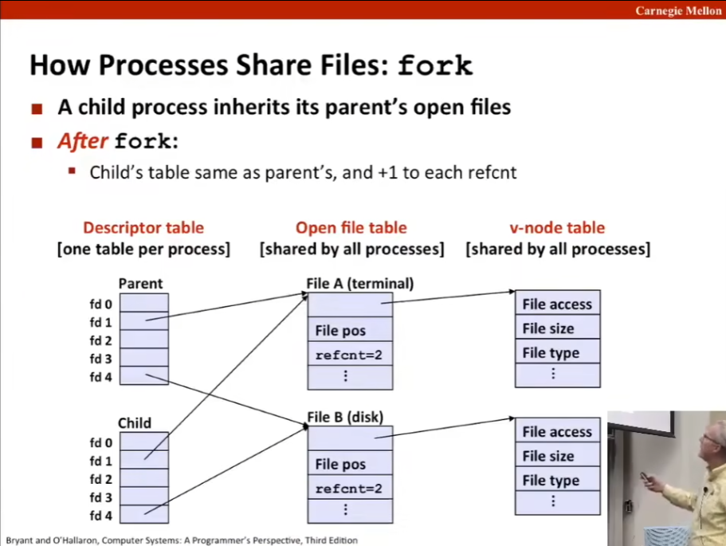
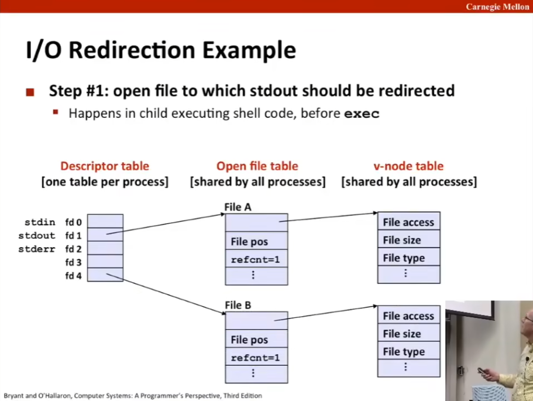
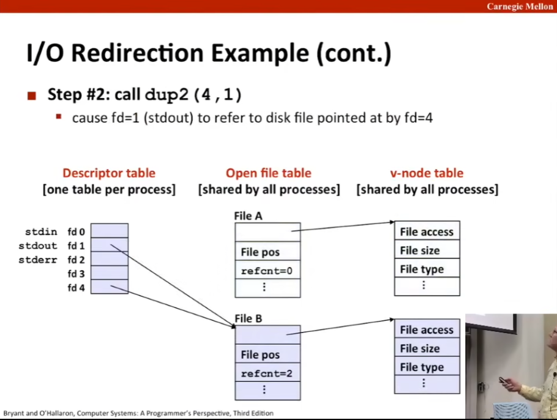
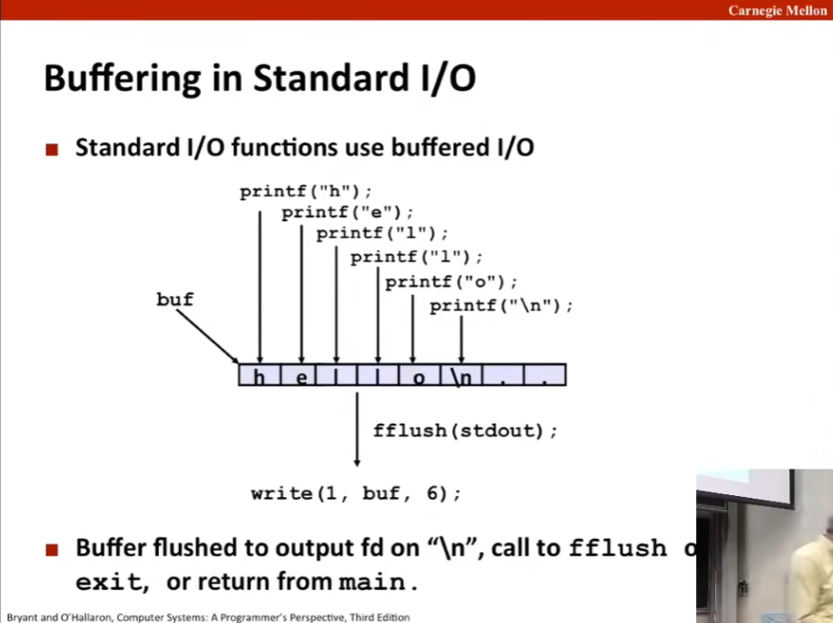
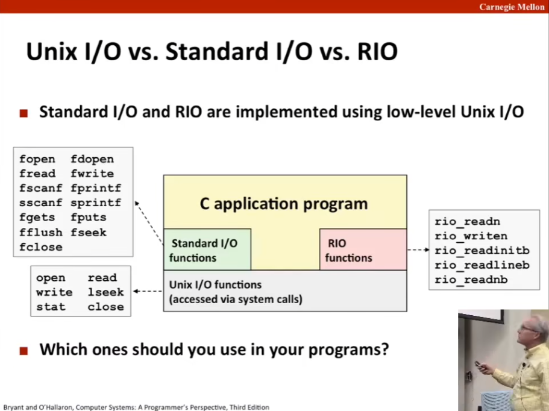

L16 System-Level I/O
Source: https://www.bilibili.com/video/BV1iW411d7hd?p=16
Today
Unix I/O
RIO (robust I/O) package
Metadata, sharing, and redirection
Standard I/O
Closing remarks
Unix I/O Overview
Unix 文件：万物皆文件，文件皆字节序列，不区分文件类型。
A Linux file is a sequence of m bytes,
\(B_0, B_1,\cdots, B_k,\cdots,B_{m-1}\).
Cool fact: All I/O devices are represented as files:
/dev/sda2 (/usr disk partition) （sda 表示套接字（socket），网络连接后，通过互联网进行通信，实际上是通过写入套接字来发送信息，并从套接字读出接收的信息的；低级 API 中也是通过在磁盘驱动器上读写文件以及通过互联网发送数据包。）
/dev/tty2 (terminal) （tty 表示电传打字机 TeletTYpe，过去人们用它来描述打字机与计算机的接口）
Even the kernel is represented as a file:
/boot/vmlinuz-3.13.0-55-generic (kernel image)
/proc (kernel data )
Elegant mapping of files to devices allows kernel to export simple interface called Unix I/O.
Opening and closing files
open() and close()
Reading and writing a file.
read() and write()
Changing the current file position (seek)
当前文件位置（current file position）：表示当前读到的文件内容的位置。
indicates next offsets into files to read or write.
lseek()
\(B_0, B_1,\cdots, B_k\leftarrow ,\cdots,B_{m-1}\)，current file position = k.
File Types
Each file has a type indicating its role in the system.
普通文件 regular file: Contains arbitrary data.
目录 Directory: Index for a related group of files.
套接字 Socket: For communicating with a process on another machine.
Other file types beyond our scope.
管道文件 Named pipes (FIFOs) 这是一类特殊的文件，既是前一程序的输入也是后一程序的输入。
符号链接 Symbolic links 这是一类特殊的文件，不需要创建副本就可以有多个名称，被多个指针指向。
Character and block devices.
Regular Files
A regular file contains arbitrary data.
Applications often distinguish between text files and binary files.
文本文件 Text files are regular files with only ASCII or Unicode characters.
二进制文件 Binary files are everything else. e.g. object files, JPEG images.
Kernel doesn't know the difference!
Text file is sequence of text lines.
Text line is sequence of chars terminated by newline char ('\n')
Newline is 0xa, same as ASCII line feed character (LF).
End of line (EOL) indicators in other systems
Linux and MacOS: '\n'(0xa): line feed (LF)
Windows and Internet protocols: \r\n(0xd 0xa): Carriage return (CR) followed by line feed (LF).
老式打字机（old-fashioned typewriter）：打字机左侧是一个滚筒（bar），当你打字时，纸就会随着滚筒向左平移，当滚筒移动到末端时，需要回到下一行的开头，这时候既需要回车（把滚筒推到右边，回到该行行首，carriage return），也需要换行（让滚筒切换到下一行，这一步需要手动转旋钮完成，line feed）。
Directories
Directory consists of an array of links.
Each link maps a filename to a file.
Each directory contains at least two entries.
. (dot) is a link to itself.
.. (dot dot) is a link to the parent directory in the directory hierarchy (next slide).
Commands for manipulating directories
mkdir: create empty directory.
ls: view directory contents.
rmdir: delete empty directory.
目录层次结构 Directory Hierarchy
All files are organized as a hierarchy anchored by root directory named / (slash)
Kernel maintains 当前工作目录 current working directory (cwd) for ea??
Modified using the cd command.
目录又是指向其子目录的指针，而子目录也是文件。
路径名 Pathnames
Locations of files in the hierarchy denoted by pathnames.
绝对路径 Absolute pathname starts with / and denotes path from root.
e.g. /home/droh/hello.c
相对路径 Relative pathnames denotes path from current working directory.
e.g. ../droh/hello.c where cwd is /home/bryant.
还可以用 ~（tilde） 或 ~/ 来指定相对于用户目录的路径名。
利用文件名对文件进行打开（open）、读（read）、写（write）、关闭（close）操作，而这些程序本质上还是一些文件。
Opening Files
Opening a file informs the kernel that you are getting ready to access the file.
int fd; /* file descriptor */
if ((fd = open("/etc/hosts", O_RDONLY)) < 0) {
perror("open");
exit(1);
}
此处打开文件，除了指定路径名，还需要一个整数表明打开方式，此处 O_RDONLY 即以只读方式打开。这些整数由一系列预先定义好的常量指定，但是你要 include 相关文件，如果没有，可以自己查对应整数。
（打开操作）返回一个文件描述符。Returns a small identifying integer file descriptor.
fd == -1 indicates that an error occurred,
文件描述符是一个较小的整数，并且顺序递增，其存在上限，即限制了同时打开的文件之数量。使用 limit 命令查看 descriptors 一栏，得到这个上限（一般是 1024）。
我们应当总是要检查返回值，以避免错误带出新错误。但更多人不检查，只是忽略它并祈祷不要出错。
Each process created by a Linux shell begins life with three open files associated with a terminal:
0: standard input (stdin)
1: standard output (stdout)
2: standard error (stderr)
Closing Files
Closing a file informs the kernel that you are finished accessing that file.
int fd; /* file descriptor */
int retval; /* return value */
if ((retval = close(fd)) < 0) {
perror("close");
exit(1);
}
关闭文件也能出错？能的，特别是在多线程程序中。
在多线程程序中关闭一个已经关闭的文件显然是一场灾难。Closing an already closed file is a recipe for disaster in threaded programs (more on this later).
Moral: Always check return codes, even for seemingly benign function such as close().
Reading Files
Reading a file copies bytes from the current file position to memory, and then updates file position.
char buf[512];
int fd; /* file descriptor */
int nbytes; /* number of bytes read */
/* Open file fd ... */
/* Then read up to 512 bytes from file fd */
if ((nbytes = read(fd, buf, sizeof(buf))) < 0) {
perror("read");
exit(1);
}
在低级 I/O 中，读函数就是 read()，调用该函数需要一个文件描述符，一个指向缓冲区的指针，和指定的缓冲区的长度以避免溢出。缓冲区可以通过静态分配或 malloc 分配得到。读入字符需至少一个，并且一定不会超过缓冲区长度。当读入的字节数小于指定的最大值时，称为不足值（short read），需要注意这种情况。
Returns number of bytes read from file fd into buf.
Return type ssize_t is signed integer.
nbytes < 0 indicates that an error occurred.
Short counts (nbytes < sizeof(buf)) are possible and errors.
Writing Files
Writing a file copies bytes from memory to the current file position, and then updates current file position.
char buf[512];
int fd; /* file descriptor */
int nbytes; /* number of bytes write */
/* Open file fd ... */
/* Then write up to 512 bytes from file fd */
if ((nbytes = write(fd, buf, sizeof(buf))) < 0) {
perror("write");
exit(1);
}
Simple Unix I/O example
Copying stdin to stdout, one byte at a time.
#include "csapp.h"
int main(void) {
char c;
while(Read(STDIN_FILENO, &c, 1) != 0)
Write(STDOUT_FILENO, &c, 1);
exit(0);
}
这样的代码确实可以，但每次只操作一个字节将会导致连绵不断的上下文切换，对于中等大小的文件，时间开销就已经相当巨大。
关于不足值 On Short Counts
Short counts can occur in these situations:
Encountering (end-of-file) EOF on reads.
EOF 的情形是这样的，假设还有 100 个字节，要读入 200 个字节，先读入 100 个字节，给出一个不足值，返回值为 100；再单独读 EOF，返回值为 0，也是不足值。
Reading text lines from a terminal.
Reading and writing network sockets.
终端读入和网络读入其实是一样的，对于输入实际上都拆成了小包：终端拆解为每一行，网络拆解为数据包，数据包大小取决于具体协议，通常约 1000 字节。
Short counts never occur in these situations:
Reading from disk files (except for EOF).
Writing to disk files.
Best practice is to always allow for short counts.
The RIO Package
RIO is a set of wrappers that provide efficient and robust I/O in apps, such as network programs that are subject to short counts.
RIO provides two different kinds of functions.
Unbuffered input and output of binary data.
rio_readn and rio_writen.
不带缓冲的读写，这些函数直到读取/写入要求的字节数之前不会停止，若不足则会暂时挂起。因此若出现预期外的 EOF 将给出一个错误。
Buffered input of text lines and binary data.
rio_readlineb and rio_readnb.
Buffered RIO routines are thread-safe and can be interleaved arbitrary on the same descriptor.
带缓冲的读写，有两种，一种基于文本，一种基于字节。
Download from [link]
[link]
Unbuffered RIO Input and Output
Same interface as Unix read and write.
Especially useful for transferring data on network sockets.
#include "csapp.h"
ssize_t rio_readn(int fd, void *usrbuf, size_t n);
ssize_t rio_writen(int fd, void *usrbuf, size_t n);
(Return: num. bytes transferred if OK, 0 on EOF (rio_readn only), -1 on error)
rio_readn returns short count only if encounters EOF.
Only use it when you know how many bytes to read.
rio_writen never returns a short count.
Calls to rio_readn and rio_writen can be interleaved and the same descriptor.
Implementation of rio_readn
/*
* rio_readn - Robustly read n bytes (unbuffered)
*/
ssize_t rio_readn(int fd, void *usrbuf, size_t n) {
size_t nleft = n;
ssize_t nread;
char *bufp = usrbuf;
while (nleft > 0) {
if ((nread = read(fd, bufp, nleft)) < 0) {
if (errno == EINTR) /* Interrupted by sig handler return */
nread = 0; /* and call read() again */
else
return -1; /* errno set by read() */
} else if (nread == 0)
break; /* EOF */
nleft -= nread;
bufp += nread;
}
return (n - nleft); /* Return >= 0 */
}
Buffered RIO Input Functions
Efficiently read text lines and binary data from a file partially cached in an internal memory buffer.
#include "csapp.h"
void rio_readinitb(rio_t *rp, int fd);
ssize_t rio_readllineb(rio_t *rp, void *usrbuf, size_t maxlen);
ssize_t rio_readnb(rio_t *rp, void *usrbuf, size_t n);
(Return: num, bytes read if OK, 0 on EOF, -1 on error).
rio_readlineb reads a text line of up to maxlen bytes from file fd and stores the line in usrbuf.
Especially useful for reading text lines from network sockets.
Stopping conditions
maxlen bytes read.
EOF encountered.
Newline ('\n') encountered.
rio_readnb reads up to n bytes from file fd.
Stopping conditions
maxlen bytes read.
EOF encountered.
Calls to rio_readlineb and rio_readnb can be interleaved arbitrary on the same descriptor.
Warning: Don't interleave with calls to rio_readn.
Buffered I/O: Implementation
For reading from file.
File has associated buffered to hold bytes that have been read from file but not yet read by user code.
Buffer |<- rio_cnt ->|
--------------------------------------------
| already read | unread | |
--------------------------------------------
^ ^
| |
rio_buf rio_bufptr
Layered on Unix file:
|<------ buffered portion ------>|
-------------------------------------------------------------
| not in buffer | already read | unread | |
-------------------------------------------------------------
^
|
current file position
Buffered I/O: Declaration
All information contained in struct.
Buffer |<- rio_cnt ->|
--------------------------------------------
| already read | unread | |
--------------------------------------------
^ ^
| |
rio_buf rio_bufptr
typedef struct {
int rio_fd; /* descriptor for this internal buf */
int rio_cnt; /* unread bytes in internal buf */
char *rio_bufptr; /* next unread byte in internal buf */
char rio_buf[RIO_BUFSIZE]; /* internal buffer */
} rio_t;
RIO Example
Copying the lines of a text file from standard input to standard output.
#include "csapp.h"
int main(int argc, char **argv) {
int n;
rio_t rio;
char buf[MAXLINE];
Rio_readinitb(&rio, STDIN_FILENO);
while ((n = Rio_readlineb(&rio, buf, MAXLINE)) != 0)
Rio_writen(STDOUT_FILENO, buf, n);
exit(0);
}
文件元数据 File Metadata
Metadata is data about data, in this case file data.
Per-file metadata maintained by kernel.
accessed by users with the stat and fstat functions.
/* Metadata returned by the stat and fstat function */
struct stat {
dev_t st_dev; /* Device */
ino_t st_ino; /* inode */
mode_t st_mode; /* Pretection and filetype */
nlink_t st_nlink; /* Number of hard links */
uid_t st_uid; /* User ID of owner */
gid_t st_gid; /* Group ID of owner */
dev_t st_rdev; /* Device type (if inode device) */
off_t st_size; /* Total size, in bytes */
unsigned long st_blksize; /* Blocksize for filesystem */
unsigned long st_blocks; /* Number of blocks allocated */
time_t st_atime; /* Time of last access */
time_t st_mtime; /* Time of last modification */
time_t st_ctime; /* Time of last change */
};
Example of Accessing File Metadata
int main(int argc, char **argv) {
struct stat stat;
char *type, *readok;
Stat(argv[1], &stat);
if (S_ISREG(stat.st_mode)) /* Determine file type */
type = "regular";
else if (S_ISDIR(stat.st_mode))
type = "directory";
else
type = "other";
if ((stat.st_mode & S_ISUSR)) /* Check and access */
readok = "yes";
else
readok = "no";
printf("type: %s, read: %s\n", type, readok);
exit(0);
}
linux> ./statcheck statcheck.c
type: regular, read: yes
linux> chmod 000 statcheck.c
linux> ./statcheck statcheck.c
type: regular, read: no
linux> ./statcheck ..
type directory, read: yes
How the Unix Kernel Represents Open Files
这是一个难点。

File Sharing

How Processes Share Files: fork


I/O Redirection
Question: How does a shell implement I/O redirection?
linux> ls > foo.txt
Answer: By calling the dup2(oldfd, newfd) function.
Copies (per-process) descriptor table entry oldfd to entry newfd.
Descriptor table ----------> Descriptor table
before dup2(4,1) after dup2(4,1)
------ ------
fd 0 | | fd 0 | |
------ ------
fd 1 |a | fd 1 |b |
------ ------
fd 2 | | fd 2 | |
------ ------
fd 3 | | fd 3 | |
------ ------
fd 4 |b | fd 4 |b |
------ ------
I/O Redirection Example


Standard I/O Functions
The C standard library (libc.so) contains a collection of higher-level standard I/O functions.
Documented in Appendix B of K&R.
Examples of standard I/O functions:
Opening and closing files (fopen and fclose)
Reading and writing bytes (fread and fwrite)
Reading and writing text lines (fgets and fputs)
Formatted reading and writing (fscanf and fprintf)
Standard I/O Streams
Standard I/O models open files as streams.
Abstraction for a file descriptor and a buffer in memory.
C programs begin life with three open streams (defined in stdio.h)
stdin (standard input), stdout (standard output), stderr (standard error).
#inlcude <stdio.h>
extern FILE *stdin; /* standard input (descriptor 0) */
extern FILE *stdout; /* standard output (descriptor 1) */
extern FILE *stderr; /* standard error (descriptor 2) */
int main() {
fprintf(stdout, "Hello, world\n");
}
Buffered I/O: Motivation
Applications often read/write one character at a time
getc, putc, ungetc
gets, fgets
Read line of text one character at a time, stopping at newline.
Implementing as Unix I/O calls expensive
read and write require Unix kernel calls.
> 10,000 clock cycles.
Solutions: Buffered read.
Use Unix read to grab block of types.
User input functions take one byte at a time from buffer.
Refill buffer when empty.
Buffering in Standard I/O

Standard I/O Buffering in Action
You can see this buffering in action for yourself, using the always fascinating Linux strace program.
#include <stdio.h>
int main() {
printf("h");
printf("e");
printf("l");
printf("l");
printf("o");
printf("\n");
fflush(stdout);
return 0;
}
linux> strace ./hello
execve("./hello", ["hello"], [/* ... */]).
...
write(1, "hello\n", 6) = 6
...
exit_group(0) = ?
Unix I/O vs. Standard I/O vs. RIO

为什么还要自己写输入输出函数呢？这是因为标准库提供的函数虽然非常适用于对终端或文件执行 I/O 操作，但不太适用于网络连接，因为其不是为网络连接设计的，所以不好用。所以课程提供的 RIO 函数主要是用于网络连接。
此外，带缓冲的 I/O 与 RIO I/O 不能很好地共存，因为它们各自有自己地缓冲区，彼此之间互不了解，还会相互干扰。切忌混用和匹配使用。
Pros and Cons of Unix I/O
Pros
Unix I/O is the most general and lowest overhead form of I/O.
All other I/O packages are implemented using Unix I/O functions.
Unix I/O provides functions for accessing file metadata.
Unix I/O functions are async-signal-safe and can be used safely in signal handlers.
Cons
Dealing with short counts is tricky and error prone.
Efficient reading of text lines requires some form of buffering, also tricky and error prone.
Both of these issues are addressed by the standard I/O and RIO I/O.
Pros and Cons of Standard I/O
Pros:
Buffering increases efficiency by decreasing the number of read and write system calls.
Short counts are handled automatically.
Cons:
Provides no function for accessing file metadata.
Standard I/O functions are not async-signal-safe, and not appropriate for signal handlers.
Standard I/O is not appreciate for input and output on network sockets.
There are poorly documented restrictions on streams that interact badly with restrictions on sockets (CS:APP3e, Sec 10.11)
Choosing I/O Functions
General rule: use the highest-level I/O functions you can.
Many C programmers are able to do all of their work using the standard I/O functions.
But, be sure to understand the functions you use!
When to use standard I/O
When working with disk or terminal files.
When to use raw Unix I/O
Inside signal handlers, because Unix I/O is async-signal-safe.
In rare cases when you need absolute highest performance.
When to use RIO
When you are reading and writing network sockets.
Avoid using standard I/O on sockets.
Aside: Working with Binary Files
Functions you should never use on binary files:
Text-oriented I/O such as fgets, scanf, fio_readlineb.
Interpret EOL characters.
Use functions like rio_readn or rio_readnb instead.
String functions
strlen, strcpy, strcat.
Interprets byte value 0 (end of string) as special.
For Further Information
The Unix bible:
W. Richard Stevens & Stephen A. Rago, Advanced Programming in the Unix Environment, 2nd Edition, Addison Wesley, 2005
Updated from Stevens's 1993 classic text.
The Linux bible:
Michael Kerrisk, The Linux Programming Interface, No Starch Press, 2010.
Encyclopedic and authoritative.
Funs with File Descriptors (1)
#include "csapp.h"
int main(int argc, char *argv[]) {
int fd1, fd2, fd3;
char c1, c2, c3;
char *fname = argv[1];
fd1 = Open(fname, O_RDONLY, 0);
fd2 = Open(fname, O_RDONLY, 0);
fd3 = Open(fname, O_RDONLY, 0);
Dup2(fd2, fd3);
Read(fd1, &c1, 1);
Read(fd2, &c2, 1);
Read(fd3, &c3, 1);
printf("c1 = %c, c2 = %c, c3 = %c\n", c1, c2, c3);
return 0;
}
What would this program print for file containing "abc"?
Fun with File Descriptors (2)
#include "csapp.h"
int main(int argc, char *argv[]) {
int fd1;
int s = getpid() & 0x1;
char c1, c2;
char *fname = argv[1];
fd1 = Open(fname, O_RDONLY, 0);
Read(fd1, &c1, 1);
if (fork()) { /* Parent */
sleep(s);
Read(fd1, &c2, 1);
printf("Parent: c1 = %c, c2 = %c\n", c1, c2);
} else { /* Child */
sleep(1-s);
Read(fd1, &c2, 1);
printf("Child: c1 = %c, c2 = %c\n", c1, c2);
}
return 0;
}
What would this program print for file containing "abc"?